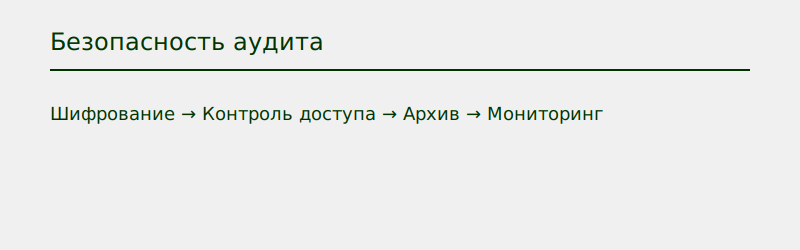

Защита логов аудита
- Привилегии только для администраторов
- Шифрование логов Unified Audit Trail
- Контроль доступа к таблицам аудита
- Архивация вне основной базы
- Мониторинг и интеграция с SIEM
Примеры настройки
REVOKE SELECT ON UNIFIED_AUDIT_TRAIL FROM PUBLIC;
GRANT SELECT ON UNIFIED_AUDIT_TRAIL TO AUDIT_ADMIN;
ALTER SYSTEM SET AUDIT_TRAIL='DB, EXTENDED';
Схема безопасности
